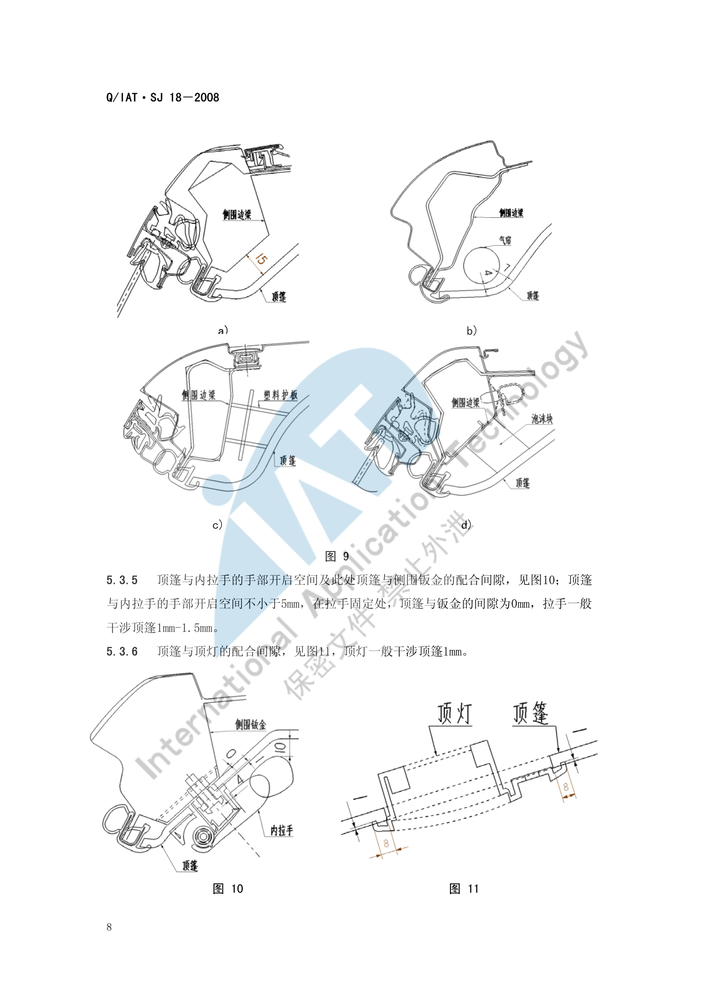
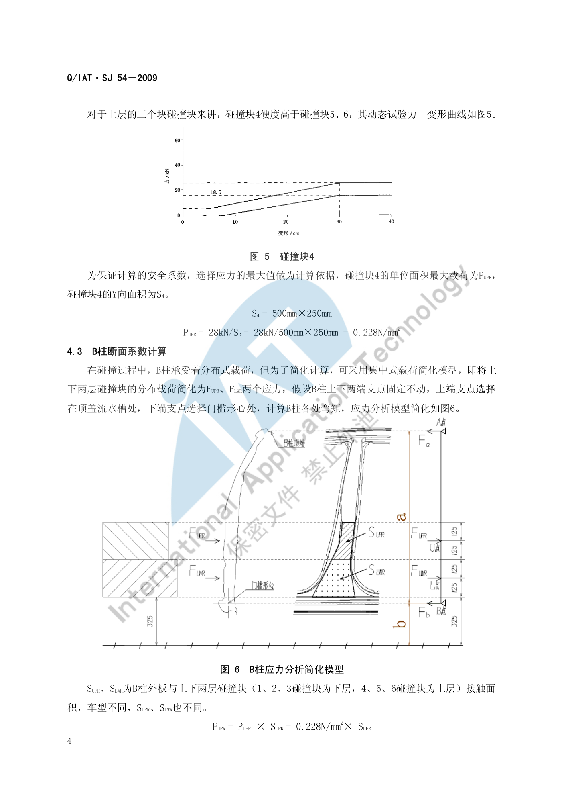

立柱布置¶
内容来源
本页正文抽取自《总布置》知识库中**可文本解析**的文件：
SJ 20-2008 立柱内饰板设计指导书、SJ 54-2009 侧碰对应B柱断面系数设定指导书、
SJ 4-2008 轿车车门主断面设计流程、SJ 9-2008 A类汽车眼椭球、头部包络面设计规范。
企业规范编号原样保留。
立柱布置体系¶
flowchart LR
R["立柱布置"]
R --> A["立柱饰板组成"]
R --> B["间隙与配合体系"]
R --> C["固定与定位"]
R --> D["侧碰断面系数"]
R --> E["人机与法规"]
A --> A1["A柱上/下内饰板"]
A --> A2["B柱上/下内饰板与滑动板"]
A --> A3["C柱上/中/下内饰板"]
A --> A4["MPV/SUV 增加 D/E 柱"]
B --> B1["饰板间 0.5-1.0mm"]
B --> B2["与玻璃 2.5-3mm"]
B --> B3["与座椅运动 大于40mm"]
B --> B4["与安全带运动 大于5mm"]
C --> C1["卡扣间距 200mm"]
C --> C2["主定位 0.3mm"]
C --> C3["辅助定位 1.0-2.0mm"]
D --> D1["GB 20071-2006 侧碰"]
D --> D2["上下层碰撞块应力"]
D --> D3["L U 点最小断面系数"]
E --> E1["立柱障碍角"]
E --> E2["GB 11552 内部凸出物"]
E --> E3["上车拉手 5% 女性"]概述¶
要点¶
（1）立柱内饰板的基本组成（SJ 20-2008 §4）
一般轿车由以下部件组成：
| 立柱 | 部件 |
|---|---|
| A 柱 | A 立柱上内饰板、A 立柱下内饰板 |
| B 柱 | B 立柱上内饰板、B 立柱上内饰板滑动板、B 立柱下内饰板 |
| C 柱 | C 立柱上内饰板、C 立柱中内饰板、C 立柱下内饰板 |
MPV、SUV、商用车在一般轿车基础上**增加** D 立柱内饰板、E 立柱内饰板、A 立柱扬声器、上车拉手、侧滑门开关等部件。
（2）设计基本要求（SJ 20-2008 §3）
| 要求 | 内容 |
|---|---|
| 法规 | 满足 GB 11552-1999《轿车内部凸出物》，技术上等效采用 74/60/EEC 及 78/632/EEC，满足圆角大小及凸出量要求 |
| 造型 | 在工程结构可实现、人机无问题的前提下尽可能满足造型意图 |
| 人机 | 满足总布置尺寸与人机工程分析要求 |
| 工艺 | 安装结构结合企业现有工艺；标准件首选客户企标件、其次国标件，尽量统一、类型尽量少 |
| 安装维修 | 现场装配方便省时，进行安装模拟，安装与拆卸都可实现 |
| 成型 | 满足拔模、空间等工艺要求，并结合供应商工艺水平 |
| 定位可靠 | 卡扣结构设计合理，预留合适的活动余量和钣金压缩余量 |
| 其他零件配合 | 与电器零件（按钮、线束、扬声器、感应器）、钣金及附件（如安全带）预留装配或配合空间 |
（3）前期（造型）分析的定义项（SJ 20-2008 §5.1）
立柱内饰板的分块要求；包裹织物或皮革织物需求及范围；上车拉手借用或开发要求（形式、材质、皮纹）；A 柱高音扬声器要求；安全带形式的定义要求。
示例¶
立柱饰板的分块与造型强相关，但其**边界由功能件反推**：上车拉手、侧滑门开关、高音扬声器都挂在立柱饰板上，SJ 20-2008 §3.9 要求在设计时预留与这些零件的装配或配合空间。
注意事项¶
- 立柱饰板的**滑动板**（B 立柱上内饰板滑动板）是为安全带高度调节器服务的，其行程必须与高调器行程匹配；
- 立柱是**侧碰的主要传力路径**，饰板下方往往布置气帘、安全带卷收器与加强板，饰板分块必须先锁定这些功能件位置。
A 柱布置¶
要点¶
（1）人机要求（SJ 20-2008 §5.2）
| 项目 | 要求 |
|---|---|
| 立柱障碍角 | 需满足要求（SJ 20-2008 §5.2.1；具体限值见 视野校核：A 柱双目障碍角 < 6°，推荐 < 5°，建议设计 < 4.5°） |
| A 柱高音扬声器 | 需定义要求并满足人机听力效果 |
| 上车拉手位置 | 满足人机操作范围，以 5% 女性为准 |
（2）A 柱相关间隙（SJ 20-2008 §5.4）
| 对象 | 间隙 |
|---|---|
| A 柱上内饰板与 IP 的表面配合 | 一般 0.5 mm |
| A 柱下饰板与发罩扣手的表面间隙 | 一般 2 mm |
| 立柱内饰板与玻璃 | 2.5 mm–3 mm |
| 立柱内饰板与顶棚（紧配合） | 过盈量 0.5 mm–1.0 mm |
| 立柱内饰板与密封条周边 | 间隙需合适、配合合理（§5.4.11） |
（3）A 柱与侧碰/气帘
A 柱上饰板区域是**侧气帘展开路径**的起始段，SJ 20-2008 §5.5.2 要求零件的分块需考虑现场工装要求（例如**安全带的装配**）；气帘饰板通常需设计可撕裂缝或弱化结构，其分块也受此约束。
示例¶
A 柱上饰板与 IP 的 0.5 mm 配合、与发罩扣手的 2 mm 间隙，是"A 柱与 IP 交界"这一高可见区域的典型取值；SJ 46-2009 §6.7 进一步给出 A 柱卡脚与仪表板外端 0.2 mm 或 0 间隙、内端与仪表板 **2 mm 装配空间间隙**的要求（见 IP 布置）。
注意事项¶
- 视野与碰撞保护是一对矛盾：A 柱越粗对侧碰/翻滚越有利，但 A 柱障碍角越大、视野越差。
SJ 7-2008的设计目标是障碍角 < 5°（法规 6°），这个目标必须**在造型阶段就作为边界输入**，等到饰板设计阶段已无调整空间。 - A 柱外覆盖件是**钣金与饰板的双重约束区**：饰板边界受玻璃（2.5–3 mm）、密封条、顶棚（过盈 0.5–1.0 mm）三重约束。
B 柱布置¶
要点¶
（1）B 柱饰板相关要求（SJ 20-2008）
| 项目 | 要求 |
|---|---|
| 组成 | B 立柱上内饰板、B 立柱上内饰板滑动板（配合安全带高调器）、B 立柱下内饰板 |
| 与安全带的运动间隙 | 一般 > 5 mm（§5.4.7） |
| 与座椅的运动间隙 | > 40 mm（§5.4.6） |
| 与门槛踏板（紧配合） | 表面间隙 0.5 mm–1.0 mm；搭接配合时阶差 1 mm、搭接长度 > 20 mm（§5.4.2） |
| 与电器开关表面 | 间隙一般 2 mm（§5.4.8） |
| 侧滑门开关（MPV 等） | 布置位置需满足人机操作范围（§5.2.4） |
（2）B 柱与车门/门洞的配合（SJ 4-2008 §4.2.2）
| 项目 | 要求 |
|---|---|
| 前门门框与 B 柱、后门门框与 B 柱的所有间隙 | > 8 mm |
| 后门开启过程中后门前包边与 B 柱、铰链座的间隙 | 最小 > 3 mm |
| 车门内板的铰链安装面、锁体安装面与 YZ 平面（冲压方向） | 成 **3° 以上**角度 |
| B 柱结构深宽比 | 应避免产生窄深结构（深宽比 > 1.5）而影响冲压工艺性 |
示例¶
B 柱断面的最大难点是**协调三个面**：前门锁安装面、后门铰链在 B 柱上的安装面、前门框密封面。SJ 4-2008 §4.2.2.6 明确要求该断面需重点检查：前门关闭时锁的切入角、锁安装在门内板上的方便性、前门/后门里板的冲压工艺性、B 柱相应部位的冲压工艺性、锁扣的装配工艺性、后门开启过程中后门前包边与 B 柱及铰链座的间隙（最小 > 3 mm）、前后门的门洞与门框密封面位置。
注意事项¶
- 安全带佩戴舒适性校核属待人工补充项：本页可引用的只有"立柱内饰板与安全带的运动间隙 > 5 mm"（
SJ 20-2008§5.4.7）；安全带固定点与佩戴舒适性的具体判据需补充 （可参考SJ 26-2008 座椅及座椅安全带设计指导书与GB 14167-2006 汽车安全带安装固定点）。 - B 柱上饰板的**滑动板**与高调器是一套机构：滑动板的分块与运动空间必须与高调器全行程一致，否则安全带会与饰板干涉。
C 柱布置¶
要点¶
（1）组成与要求（SJ 20-2008 §4、§5）
| 项目 | 要求 |
|---|---|
| 组成 | C 立柱上内饰板、C 立柱中内饰板、C 立柱下内饰板（D/E 立柱同理） |
| 与玻璃的间隙 | 2.5 mm–3 mm（§5.4.5） |
| 与顶棚（紧配合） | 过盈量 0.5 mm–1.0 mm（§5.4.3） |
| 与地毯 | 一般过盈量 1.0 mm–2.0 mm；地毯长出立柱 10 mm（§5.4.4） |
| 与扬声器的配合 | 扬声器面罩开孔面积 S > 扬声器面积的 40%，开孔 φ2 左右，孔边间距一般 1 mm（§5.3） |
| 内部凸出物 | 满足 GB 11552-1999 圆角与凸出量要求 |
（2）顶棚与侧围边梁的配合（SJ 18-2008 §5.3.4，与 C 柱区域直接相关）
| 情形 | 顶篷与侧围边梁的配合间隙 |
|---|---|
| 之间未加装任何部件、不考虑侧碰 | 8 mm–15 mm |
| 之间未加装任何部件、考虑侧碰 | 25 mm 以上 |
| 之间加装**气帘** | 理想间隙 > 3 mm；特殊情况下局部不干涉即可（> 0 mm） |
| 之间安装**塑料护板** | 间隙 0 mm |
| 之间粘接**泡沫块** | 间隙 0 mm |
示例¶
顶篷与侧围边梁的四种配合情形直接决定了 C 柱上饰板的边界：

注意事项¶
- 后视野影响评估属待人工补充项：已解析条款中未见 C/D 柱对后视野（含内后视镜间接视野）影响的量化判据；可借用的判据是
SJ 14-2008的内后视镜视野要求与**遮挡限值（15% 以下）**，见 视野校核。 - C 柱下饰板与地毯的 1.0–2.0 mm 过盈、地毯长出立柱 10 mm，是**感知质量**类要求——过盈不足会出现缝隙漏白，过盈过大则饰板被顶起。
固定与定位¶
要点¶
（1）固定方式（SJ 20-2008 §6.2.1）
| 项目 | 要求 |
|---|---|
| 主要固定方式 | 一般采用**塑料卡扣**，局部位置可用螺钉固定 |
| 卡扣固定间距 | 一般 200 mm 左右 |
| 卡扣布置 | 均匀布置在立柱内饰板上 |
| 滑块空间 | 卡扣座外部要留出**大于卡扣座内部深度 2 倍以上**的距离作为滑块的滑动空间 |
| 窄长件处理 | 立柱内饰板宽度较窄、纵向只能布置一排固定点且没有限制旋转的部件时，一般设计一定数量的**限位加强筋**与钣金配合以限制旋转 |
（2）定位设计（SJ 20-2008 §6.2.2）
| 项目 | 内容 |
|---|---|
| 定位方式 | 一般利用**卡扣座自身结构**定位 |
| 主定位 | 一个主定位控制 X、Z 方向；主定位在高度方向上一般布置在**靠近配合边**的地方（特殊情况可调整） |
| 辅助定位 | 一个辅助定位控制 X 方向 |
| 主定位间隙 | 卡扣座开孔与定位卡扣处间隙一般为 0.3 mm（按精度不同调整） |
| 辅助定位间隙 | 在**非限位方向上**间隙为 1.0 mm–2.0 mm |
（3）工艺要求（§5.5）
| 项目 | 要求 |
|---|---|
| 拔模 | 整体表面出模要求沿拔模方向 > 5°，特殊情况下最小 3°；有特殊深度皮纹要求时 > 7° |
| 分块 | 考虑现场工装要求（如**安全带的装配**） |
| 供应商工艺 | 织物的覆盖范围与厚度、分块方式、卡扣座处滑块的滑动距离、加强筋的厚度（避免缩痕）与高度 |
示例¶
定位与固定的一体化设计是内饰件的通用做法：主定位承担尺寸基准（0.3 mm 紧），辅助定位只控制方向（1.0–2.0 mm 松），其余固定点全部放开——这样的"一主一辅、其余浮动"方案可以把累积公差释放到饰板边缘，避免装配后出现翘边。
注意事项¶
- 卡扣间距 200 mm 不是任意值：间距过大饰板会离缝，过小则增加成本与装配工时；表观曲率大的部位应加密。
- 主定位孔取 0.3 mm 的紧配合意味着它同时是**检具基准**；一旦选错位置（例如选在易变形的悬臂端），测量结果将失去代表性。
侧碰断面系数¶
要点¶
（1）断面系数的意义（SJ 54-2009 §3）
在整车开发流程的**概念设计阶段**，根据新车 B 柱形状、位置和尺寸，通过简化的力学模型计算 B 柱各位置弯矩，并**按照 B 柱不同位置设定不同的断面系数目标值**，使 B 柱变形趋势更合理，从而降低 B 柱的侵入速度和减小侵入量，减轻侧碰时对乘员的伤害。适用范围：R 点与地面距离不超过 700 mm 的 M1 与 N1 类车辆。
（2）侧碰试验条件（SJ 54-2009 表 1）
| 测试规程 | 障碍壁类型 | 障碍壁质量 | 撞击速度 | 撞击角度 | 碰撞假人 |
|---|---|---|---|---|---|
| GB 20071-2006 | 可变形移动障碍壁（MDB） | 950 kg | 50 km/h | 90° | EuroSID-1 或 EuroSID-2 |
引用标准：GB 20071-2006 汽车侧面碰撞的乘员保护、ECE R95。
（3）碰撞块与载荷（§4.1～4.2）
- 可变形移动障碍壁的蜂窝铝碰撞块分**上下两层、共 6 块**；将碰撞块中心沿 Y 向对准**座椅滑轨中间位置**时的 H 点；
GB 20071-2006规定碰撞块最下沿距地面 300 mm，考虑试验误差可设定碰撞块 3D 数模最下沿距地面 325 mm（含 25 mm 试验公差）；- 下层以**碰撞块 2** 最硬，其 Y 向面积
S2 = 500 mm × 250 mm，取最大应力 70 kN 计算：PLWR = 70 kN / (500×250) = 0.56 N/mm²； - 上层以**碰撞块 4** 最硬，
S4 = 500 mm × 250 mm，取最大应力 28 kN 计算：PUPR = 28 kN / (500×250) = 0.228 N/mm²。
（4）计算模型与最小断面系数（§4.3）
简化模型：把上下两层分布载荷简化为 FUPR、FLWR 两个集中力；假设 B 柱上下两端支点固定不动，上端支点选在顶盖流水槽处，下端支点选在门槛形心处，据此计算 B 柱各处弯矩。支承点距离参数为 a，L 点（下层碰撞块中心）距下端 b。
最小断面系数公式：
ZLWR = MLWR / δ
= (0.56 × SLWR × (a + b - 450) + 0.228 × SUPR × (a + b - 700)) × (450 - b) / (a × δ)
ZUPR = MUPR / δ
= (0.56 × SLWR × (450 - b) + 0.228 × SUPR × (700 - b)) × (a + b - 700) / (a × δ)
其中 SLWR、SUPR 为 B 柱外板与上下两层碰撞块的接触面积（车型不同取值不同），δ 为钢板许用强度。
示例¶
（5）车型算例（SJ 54-2009 §5）
| 车型 | SLWR (mm²) | SUPR (mm²) | a (mm) | b (mm) | ZLWR (mm³) | ZUPR (mm³) |
|---|---|---|---|---|---|---|
| 丰田 COROLLA | 5.2×10⁴ | 2.2×10⁴ | 1144 | 259 | 1.93×10⁴ | 1.77×10⁴ |
| 海马 M2 | 4.06×10⁴ | 2.46×10⁴ | 1166 | 246 | 1.68×10⁴ | 1.62×10⁴ |
校核方法：在 B 柱各位置剖切断面并计算其断面系数，与"最小断面系数要求线"比较，要求各处的断面系数均位于要求线右侧。
结论参考：COROLLA 的断面系数**远高于**应对 GB 20071-2006 的最低要求，原因是其并非仅针对中国市场设计，同时考虑出口对应美国 NAS 标准等，预留了足够的断面系数安全余量，因此在 C-NCAP 取得侧碰 16 分满分、整车 5 星成绩。

注意事项¶
- 断面系数是**概念设计阶段的"定量造型约束"**：它能直接告诉造型"B 柱这个高度上最小要多大截面"，避免在侧碰 CAE 阶段才发现结构不足而返工。
- 多车型沿用同一 B 柱断面时，应**按最不利的 R 点高度与轴距重新计算**——a、b 两个支点距离一变，最小断面系数要求线就整体移动。
- 断面系数只解决**弯曲溃变**问题；侧碰还包括侵入量、侵入速度、乘员伤害指标（假人响应）等，需与整车侧碰 CAE 联合评价。
待人工补充¶
本页待人工补充清单
- **安全带佩戴舒适性**的具体校核判据（本页仅有"与安全带运动间隙 > 5 mm"）；
- **气帘展开路径**与饰板弱化结构的设计要求：已解析条款未涉及；
- **C/D 柱对后视野的影响**的量化评估要求；
SJ 55-2010 乘用车外后视镜设计指导书、SJ 29-2008 车身RPS设计指导书已下载，可作为立柱 RPS 定位体系的补充（本页定位要求来自SJ 20-2008）；SJ 54-2009附录中的图示（图7 断面系数对比曲线）为图片页，本页以算例数值代替；- 知识库中以下文件虽相关但因读取问题**未采用**：
AEM-A4-101 汽车座椅头枕性能校核规范、AEM-A4-102 汽车安全带固定点校核规范与流程。
建议：在 IMA 客户端中打开对应文件补充条款，或按"规范编号 + 页码"方式人工引用。